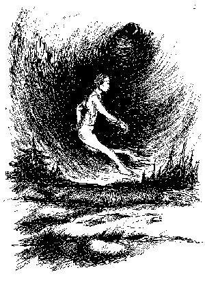
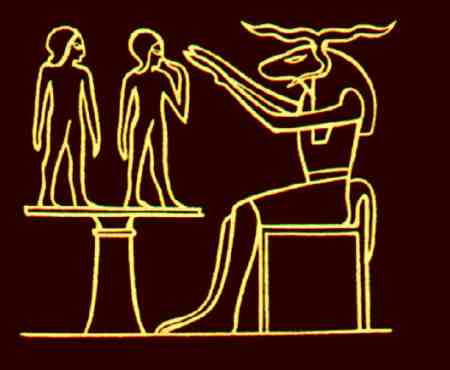

Copyright © 1997, Alfred Ballabene. All rights reserved.

PART 1: OBE In The Etheric Body |
Synonyms for the etheric body:
Robert Crookall wrote in "The Techniques of Astral Projection" (Wellingborough, Northamptonshire: The Aquarian Press, 1981, Paperback Ed., p.88):
"Mediumistic people have loose vehicles of vitality and always tend to extrude part of that along with the Astral Body - but this enveiling feature generally returns, along the "silver cord" to the physical body, so that originally composite "double" becomes simple."
 |
Chnum shapes body and Ka (= the etheric body)
In this following article I want to demonstrate that there are a series of phenomena in OBE's, which are evidently in connection to etheric matter and which do not belong to the astral body and the astral plane. The "composite double" (composed of the etheric- and the astral-body, like shells one in the other), here called etheric body (in the way of simplification), is dissociated from the physical body by special techniques, which differ from pure astral projection techniques. Nevertheless OBEs in the etheric body can develop to astral travelling. Due to this latter fact, very often the existence of an etheric body is ignored, which leads to confusion and to a lack of understanding for diverse reports of experiences. Some of the most common features are mentioned in this article on the basis of own experience.
Theoretical Considerations
Bound to the physical world something exists, which forms a bridge between the physical and the astral plane. You can use smoke as analogon. Smoke is visible like solid matter and it is light as air; actually it consists of both elements. In the same way this subtle matter shifts in its characteristics between the physical and the astral world.
The terms, which are used for the ether, are based on different philosophical and traditional backgrounds and therefore emphasize slightly different aspects: ether, Chi, Ki, Prana, Od, fluid, Bioplasm, vital energy etc.
It is possible while OBEíng with the etheric body, that all etheric matter of your subtle body may be reintegrated into the physical body back again (as a consequence of increasing distance to the physical body). Then your consciousness stays in the astral shell, which is left. Your etheric-OBE has changed to astral travelling. This is easily explained in theory, but practically it veils the differences between etheric and astral OBE-íng. For this reason frequently in many publications no difference at all is pointed out; consequently considerable confusion arises.
Different Etheric Phenomena
The IBE state (still in the body but with astral awareness) can be concerned as a prestage of OBE-ing. In this state scaring situations may occur; these situations are safely overcome when you are fearless and/or curious. After the first confrontations with the phenomena of this kind of prestage, everyone becomes used to it. It is a very interesting field to learn about.
Symptoms and Phenomena
Sensory perception, in general:
"Astral sensory perception" is possible in the "etheric" state, but sometimes you may have instead "physical sensory perception".
Vision:
There are 2 kinds of visual perception - astral vision and at some few occasions "physical vision". However, very often the astral visual perception is not yet established when starting etheric OBE. Therefore no vision exists (you are wrapped in blackness).
"The lack of visual perception for me was very annoying. Wrapped in deepest darkness, I stepped forward into the black night, having nevertheless a good orientation by a kind of inner space sensing. In a certain distance from my physical body I always was able to see. This kind of vision was astral."
As I suppose: though etheric matter is existing, no etheric plane exists and therefore no etheric sight.
"When I saw, objects they were not identical with those of the physical plane, even when it seemed so at the first glance. Therefore I did not see the etheric counterparts of the physical plane (structures of both should be identical, as Theosophs say and as I believe as well). On the other hand, for instance, being in the etheric body I once saw my guardians (living on astral plane), whom I knew, because I have met them several times in the astral plane."
"Physical vision" is often reported in NDE's. There are as well some rare OBE's where the physical environment was seen and heard, but they are rather an exception and difficult to explain.
Voices:
Usually I was accustomed to silence in OBE-prestage, in contrary to false awakening, in which state I was surrounded by noisy "people". When overtired I experienced another state, which happened in the first years of Yoga, when I made my exercises late in the evening. At these occasions I very often heard unpolite words and curses of entities, which seemed to surround me. Once when the voices became too molesting, I pushed them away like a foggy cloud, and this kind of disturbance was gone for ever. Hearing voices in the state of false awakening, however, is a totally different kind of phenomenon (this is more dreamlike and less psychic). In false awakening I actually can see the persons, who are speaking to each other or to me and they are not threatening and mostly polite.
Partial body-separation:
When the consciousness is shifting more and more towards the etheric body, the etheric body gains increased liveliness and independence. The consciousness in the etheric body state was always clear, as to my experiences, I was alert exactly as in daytime awake state; therefore I often thought to have become awake and to have fallen out of trance. But by ignoring this pretended awakeness and by continuing my exercises none-the-less, I usually was very amazed, when I became aware that I could move my etheric limbs. Testing my freedom of movement, usually there were no difficulties to move legs, arms and head. In contrary to limbs and head the trunk mostly was stuck firm in the physical body. When frequently OBE-ing the difficulty of sticking to the body vanished and then stepping out became more and more easy.
Ectoplasm (Ektoplasma):
Ectoplasmic emanations are not very common (they are a sign of mediumism) and consist of a denser ectoplasmic matter than all the other mentioned etheric phenomena. I have seen ectoplasmatic emanations only once:
"It's a curious thing to see ektoplasma flow slowly out of the mouth, in its viscosity like honey. It was a broad stream of greyish color, with black, crystal-like spots. At the edges it seemed to evaporate like steam."
When starting trance in an armchair, I usually had considerable saliva production. After a while, when I drifted to a deeper relaxation, I felt something like cold wind or a cold liquid, which seemed to flow from the right edge of my mouth down to the chin. For a long time I could not distinguish, if it was cold saliva or cold wind. By the years I found out, that it was "cold wind", a feeling produced by skin contact with ectoplasm, as I suppose.
Touch: (Only in the IBE state) Sometimes I had the sensation of being touched by spirits (I usually was wrapped in darkness). When I felt a kind of pulsating knock at the footsoles or at the basis of the spine, this was a signal to me, that obsession spirits wanted to enter and incorporate my body. When I felt bothered, I took a grip on them and then threw them away. Except once they seemed to have nearly no weight. I was not afraid, and there was no real danger. It's not possible for a healthy person to be obsessed.
Silver cord: In all "stepping-out"-OBE's, which were induced in trance, I could feel the pull of the silver cord, which limited my excursions to a certain distance. The distance was too short to make wider excursions and to experience interesting situations. Therefore the silver cord was a bothering limitation for my OBEing when using the "stepping out" method.
Figure (1): After having moved to a certain distance (50 - 70m) I usually felt the pull of the silver cord. Struggling against this fixation I had no chance t move further and then in the next moment I was back again in my physical body.
Double consciousness:
In etheric OBE's, although I felt myself bodily present in the subtle shell, I had acoustical inputs by my physical body. For instance I heard loud noise of cars and tram. I could suppress this interference for a short time and continue my travelling. If the noise was too loud and persisted, my attention was caught by it unwillingly and I was pulled back.
Exterriorization with the Etheric Body
Ways of Body Separation:
Stepping out of the physical body in trance or in the state of false awakening.
Rolling out of the physical body.
Floating out of the physical body.
PART 2:
Astral Travelling
What You Can Expect, When Astral Travelling:
In astral travelling you mostly enter an environment quite different from physical plane. Even if you stay in your own room and you have the impression to see the physical surrounding, by detailed inspection you will be able to realize slight differences (books and little objects for instance have changed). Therefore though objects seem to be physical identically, they are not but instead they are astral duplications.
A typical astral aspect is the experience of intense and deep emotions (in the etheric body you have your normal daytime emotions).
On astral plane you are capable of empathy and telepathy as a new kind of perception.
In astral locations you can meet deceased relatives, guardians and friends living in transcendental planes, who seem to have known you for a long time, although you can´t remember to have seen them before.
In astral plane there are different rules how matter is composed, shaped and handled. Materialisation and variability of forms are common there.
In these subtle worlds zoomlike seeing despite of distance and transparency is possible.
What people look like is determined by psychological rules.
It needs some experience to get used to these special conditions and to be able to manipulate objects, as well as to handle the way of your own movement.
In the morning after astral travelling I mostly felt strengthened by accumulated inner energies. I had no sleep-shortage, although I had been fully alert during my astral travellings. Even in those few events, when astral travelling lasted all night I was not tired.
In a typical astral travelling my subtle body was vibrating with energy and I had a telepathic awareness for any objectives towards which I directed my attention.
Methods To Induce Astral Travelling
General Considerations:
Most astral travellings I had, came by chance. I don´t know a really successful method which would be easy to be performed. I have used some techniques, but they only led to a touristic kind of sightseeing but not to encounters with spiritual guides or astral friends.
My best way to induce astral travelling however is indirect and includes meditation, visualization and emotionalization with respect to desire or to a kind of "soul-homesickness".
Relaxation:
The natural way: In the morning relaxation methods accompanying the falling asleep tendency will promote states with higher inner awareness.
Techniques: In literature you find different techniques for relaxation. Principally, however, they are very similar. Well known are "Autogene Training" and "Savasana" in Yoga).
Savasana (Indian term and technique for relaxation):
Lay backwards down on the floor, your hands aside your body.
Put a flat pillow underneath your head and bend your head somewhat sidewards, in
order to prevent that your tongue in relaxed state will impede your respiration.
Tighten your muscles and clench your fists for some seconds. Subsequently relax.
Check your relaxation, starting from the feet, ending with neck and face.
After muscle relaxation direct your attention to blood-circulation and
afterwards to body-warmth.
In a next step turn your attention inwards and just wait what is going to
happen. Wait and don´t loose your inward directed attention by thinking and
drifting away in fantasies.
Source: http://mailbox.univie.ac.at/Alfred.Ballabene/english/alfred.htm